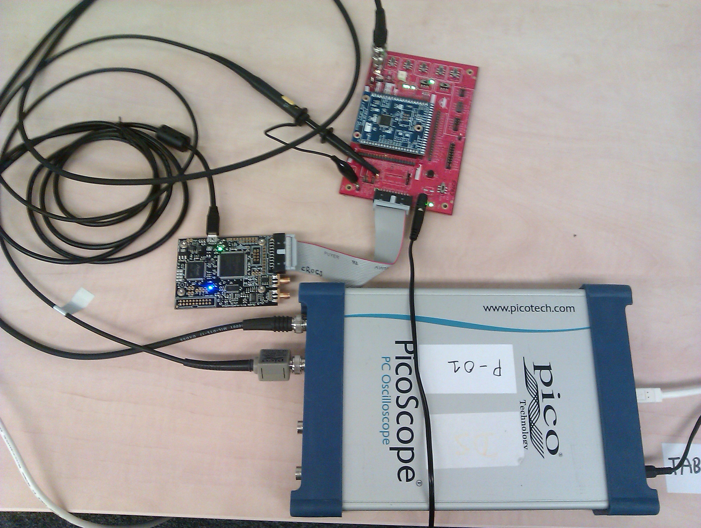
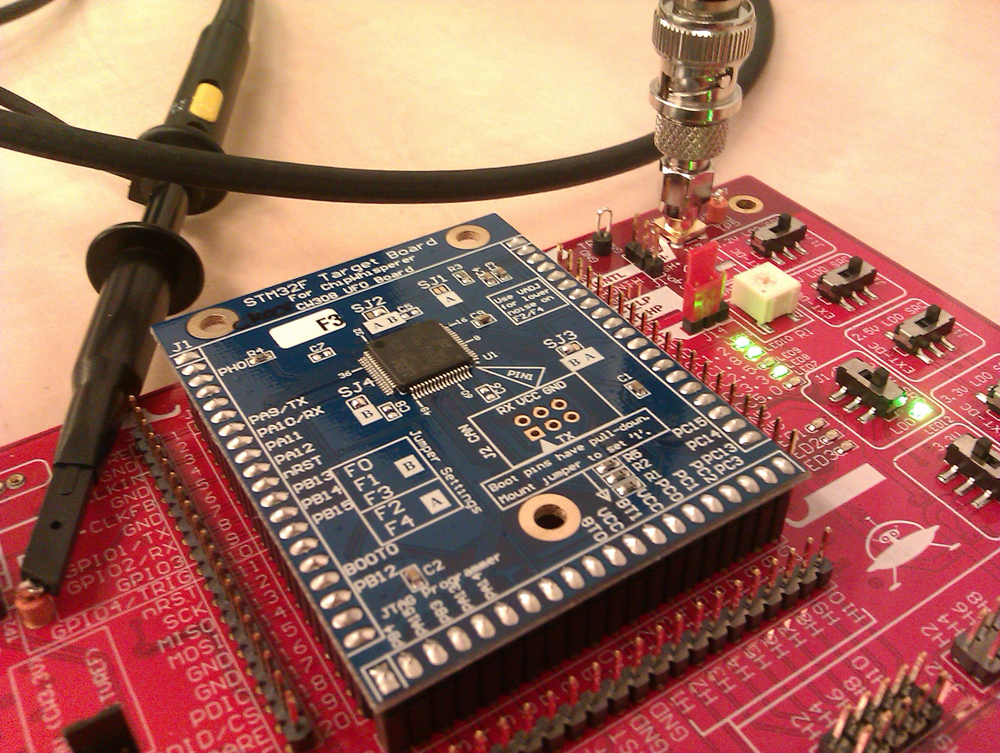

Measurement¶
This notebook showcases how to use pyecsca to generate and measure an ECC implementation. This example use the ChipWhisperer-Lite board, along with the UFO target board (with an STM32F3 target on top) and a PicoScope 5000 oscilloscope to measure.
Oscilloscope setup¶
First we will setup the scope. Channel A will be used for the power signal, so we connect the MEASURE SMA plug (on the UFO board) to the scope A input via an SMA-BNC cable. Channel B will be used for the trigger, so we connect a probe to TP2 point on the UFO board and connect it to input B on the scope.

Next we connect to the scope and display its identifier.
[ ]:
from pyecsca.sca.scope.picoscope_sdk import PS6000Scope
scope = PS6000Scope()
scope.open()
print(scope.get_variant())
Then we setup the channels, A in AC coupling with 0.2 Volt range, B in DC coupling with 5 Volt range.
[ ]:
scope.setup_channel(channel="A", coupling="AC", range=0.2, offset=0.0, enable=True)
scope.setup_channel(channel="B", coupling="DC", range=5.0, offset=0.0, enable=True)
Then we set the frequency and amount of samples. We set 6.4 MHz and 16M samples, which should lead to a 3 second capture time (which should cover the long scalar multiplication operation on the chip ~ 2.8s).
[ ]:
actual_frequency, samples = scope.setup_frequency(frequency=6_400_000, pretrig=500_000, posttrig=15_500_000)
print(actual_frequency, samples)
Next we setup the trigger on channel B. We also set channel A as the channel to capture. In this example we also capture the B channel to showcase the dynamic triggering capabilities.
[ ]:
scope.setup_trigger(channel="B", threshold=0.5, direction="rising", delay=0, timeout=5000, enable=True)
scope.setup_capture(channel="A", enable=True)
scope.setup_capture(channel="B", enable=True)
Device setup¶
The STM32F3 UFO target board is used next, we now will generate and build an ECC implementation.

[ ]:
import tempfile
from os.path import join
from pyecsca.codegen.common import Platform, DeviceConfiguration
from pyecsca.codegen.render import render_and_build
from pyecsca.ec.model import ShortWeierstrassModel
from pyecsca.ec.mult import LTRMultiplier
from pyecsca.ec.configuration import *
platform = Platform.STM32F3
hash_type = HashType.SHA1
mod_rand = RandomMod.REDUCE
mult = Multiplication.BASE
sqr = Squaring.BASE
red = Reduction.BARRETT
inv = Inversion.EULER
model = ShortWeierstrassModel()
coords = model.coordinates["projective"]
add = coords.formulas["add-1998-cmo"]
dbl = coords.formulas["dbl-1998-cmo"]
formulas = [add, dbl]
scalarmult = LTRMultiplier(add, dbl)
config = DeviceConfiguration(model, coords, formulas, scalarmult,
hash_type, mod_rand, mult, sqr, red,
inv, platform, True, True, True)
tmpdir = tempfile.TemporaryDirectory()
directory, elf_file, hex_file, res = render_and_build(config, tmpdir.name)
fw = join(tmpdir.name, hex_file)
Now we will create a target and flash the implementation on it. The target constructor requires to know some parameters of the configuration, to be able to communicate with it.
[ ]:
from pyecsca.codegen.client import DeviceTarget
target = DeviceTarget(model=config.model, coords=config.coords, platform=config.platform, timeout=10000)
target.flash(fw)
Measurement¶
We can now connect to the target, arm the scope and generate a keypair on the target while measuring it, then collect the trace.
[ ]:
from time import sleep, time
from pyecsca.codegen.client import Triggers
from pyecsca.sca.trace import Trace
from pyecsca.sca.scope import SampleType
from pyecsca.ec.params import get_params
params = get_params("secg", "secp128r1", "projective")
print("Connect")
target.connect()
print("Set parameters")
target.set_params(params)
print("Set trigger")
target.set_trigger(Triggers.keygen)
print("Init PRNG")
target.init_prng(b"\x12\x23")
print("ARM scope")
scope.arm()
sleep(5)
start = time()
priv, pub = target.generate()
end = time()
print(end - start)
scope.capture(10000)
print("Retrieve")
trace = scope.retrieve("A", SampleType.Volt)
trig = scope.retrieve("B", SampleType.Volt)
print("Disconnect")
target.disconnect()
print(priv)
print(pub)
After all measurements are done, we disconnect from the scope. And delete the directory with the firmware.
[ ]:
target.scope.dis()
scope.close()
tmpdir.cleanup()
Visualization¶
We will now visualize the trace.
[ ]:
from pyecsca.sca.trace.plot import plot_traces
import holoviews as hv
hv.extension("bokeh")
[ ]:
plot_traces(trace, trig).opts(width=950, height=600)
[ ]: